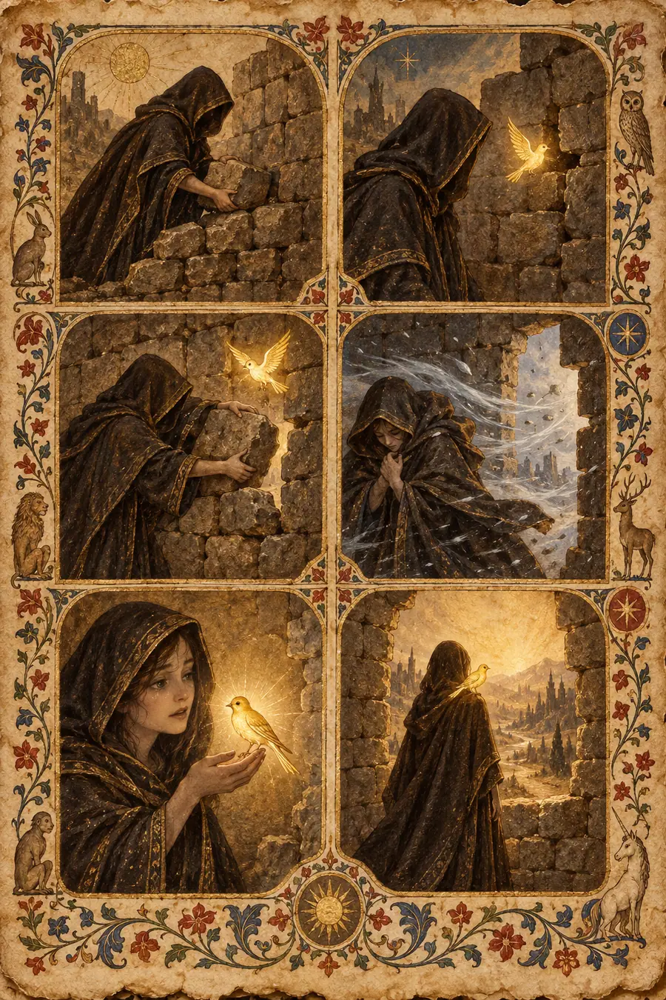

I. La Explicación Lógica
La vulnerabilidad es el estado de exposición a la posibilidad de sufrir un daño: físico, emocional o social. En psicología, la investigación de Brené Brown define la vulnerabilidad como incertidumbre, riesgo y exposición emocional. No es debilidad, sino el núcleo de la experiencia humana significativa: el lugar donde nacen el amor, la pertenencia, la alegría, el coraje, la empatía y la creatividad.
En la teoría del apego, la vulnerabilidad está regulada por modelos operativos internos desarrollados en la primera infancia. Los individuos con apego seguro pueden tolerar la vulnerabilidad porque aprendieron que la exposición suele ser recibida con cuidados. Los individuos con apego ansioso revelan en exceso —la vulnerabilidad como una puja por obtener consuelo—. Los individuos con apego evitativo revelan muy poco —la vulnerabilidad como una amenaza a la autosuficiencia—. La capacidad para la vulnerabilidad no es una elección, sino un logro del desarrollo.
En términos evolutivos, la vulnerabilidad es costosa. Mostrar debilidad invita a la explotación. El hecho de que los humanos lo hagan de todos modos —que confesemos amor, admitamos miedo, pidamos ayuda— sugiere que las recompensas sociales de la vulnerabilidad superan sus riesgos en entornos donde la cooperación es posible. La confianza es el prerrequisito: solo eres tan vulnerable como crees que la otra persona es segura.
La comunicación efectiva de la vulnerabilidad requiere calibración. Demasiado poca y eres un muro. Demasiada y eres abrumador. El ideal es la «vulnerabilidad apropiada»: suficiente para crear conexión, no tanta como para cargar al oyente con la gestión de tu estado emocional.
Esa explicación es pulcra, empíricamente fundamentada, correcta y completamente hueca. Sabe que la vulnerabilidad es el lugar donde nace el amor, pero no lo que se siente al estar de pie en el instante antes de que las palabras abandonen tu boca, sabiendo que podrían ser recibidas o aplastadas y que no sabrás cuál de las dos hasta que impacten.
II. La Explicación Sentida
El Coste de la Palabra Desnuda
La vulnerabilidad no es un estado. Es una decisión que se toma en el medio segundo antes de hablar —el medio segundo en que la frase está formada y aún no te ha abandonado, en que todavía es tuya y está a salvo y puede deshacerse—. Ese medio segundo lo es todo.
Leia Organa no dice «Te quiero» fácilmente. Ha pasado dos películas construyendo muros —la princesa mandona, el ingenio mordaz, la negativa a ser blanda—. Su vida entera le ha enseñado que la blandura es peligrosa. Es la líder de una rebelión. Ha sido torturada. Ha visto morir su planeta. Y ahora, en la cámara de carbonita, con Han a punto de ser congelado y posiblemente asesinado, dice las tres palabras que le cuestan más de lo que jamás podría costarle cualquier operación militar. No porque las palabras sean complicadas. Porque las palabras están desnudas. Sin ingenio. Sin evasivas. Sin personaje. Solo su corazón, ofrecido en sus manos, sin garantía de que no lo dejen caer.
Esto es sphoṭa —el estallido de significado que ocurre entre oír una palabra y comprenderla—. La vulnerabilidad es sphoṭa a la inversa: el significado existe antes que la palabra, plenamente formado, plenamente aterrador, esperando en el vacío entre formar la frase y liberarla. El momento antes de la liberación es el momento en que todavía tienes el control. Tras la liberación, las palabras pertenecen a la otra persona. Pueden hacer cualquier cosa con ellas. No puedes recuperarlas.
La palabra del griego antiguo alētheia significa des-ocultamiento. La vulnerabilidad es elegir des-ocultarse. Quitarse la armadura, la persona, la agudeza, y quedarse ahí de pie como lo que uno es en realidad. El terror no es que te vean. El terror es que te vean y te consideren insuficiente. La armadura no solo ocultaba tu blandura, sino tu miedo a que tu blandura sea fea. La vulnerabilidad es la apuesta de que no lo es.
Por Qué se Protege la Gente Reservada
Algunas personas no son simplemente reservadas; están constituidas por sus defensas. Han Solo no es Han Solo sin su personaje de canalla. Los muros no son algo que él levantó. Son algo en lo que se convirtió. Cuando has vivido detrás de unos muros el tiempo suficiente, los muros dejan de ser protección y empiezan a ser identidad. No sabes quién eres sin ellos.
Esto es fanāʾ —disolución del yo—. Ser vulnerable es dejar que el yo protegido se disuelva. La persona que sale de detrás del muro no es la misma persona que estaba de pie tras él. El yo protegido debe morir para que el yo vulnerable pueda hablar. Por eso la vulnerabilidad se siente como una pequeña muerte. Lo es.
La tradición sufí entendía que el yo se aferra a sus propios límites porque teme la disolución. Pero la disolución es también el único camino hacia la conexión. La flauta de caña de Rumi llora no porque fuera cortada del cañaveral, sino porque el corte creó un espacio hueco a través del cual la música podía pasar. La vulnerabilidad es el corte. El espacio hueco es por donde entra la conexión. Pero primero tienes que sobrevivir al corte.
El concepto coreano de nunchi —leer el ambiente— es lo que la gente reservada hace en lugar de ser vulnerable. Leen. Calculan. Evalúan si es seguro. La vigilancia es agotadora, pero se siente más segura que permanecer indefenso. La tragedia es que el nunchi, practicado durante demasiado tiempo, se convierte en una barrera para la misma conexión que se suponía que debía proteger. Te vuelves tan bueno leyendo el ambiente que olvidas cómo estar en el ambiente.
El concepto yoruba de Ìwà —el carácter como algo que emanas— explica por qué la vulnerabilidad de una persona reservada impacta con más fuerza. Cuando alguien cuyo Ìwà son los muros de repente los baja, el contraste es todo el poder. Leia diciendo «Te quiero» significa más que un personaje naturalmente efusivo diciéndolo cien veces. La rareza es el peso. Los muros son el contexto que hace legible el descenso.
El Terror Específico de «Te Quiero»
«Te quiero» es la frase más peligrosa del idioma. No porque el amor sea peligroso. Porque la frase no tiene salida. «Me gustas» tiene salidas —puedes gustarle a alguien como amigo, puedes gustarle temporalmente, gustar es de bajo riesgo—. «Te quiero» cierra todas las puertas a su paso. Una vez pronunciado, eres alguien que quiere a esta persona. Puede que no te quieran de vuelta. Puede que te quieran de vuelta, pero de forma diferente. Puede que te quieran ahora y dejen de hacerlo más tarde. La frase te expone a todos estos futuros.
El concepto español de duende —el poder oscuro en el arte que te agarra la garganta— vive en los momentos vulnerables. El duende no es blando. No es gentil. Es la fuerza que surge cuando alguien lo arriesga todo en una actuación. El cantaor de flamenco con la voz rota. El actor que deja de actuar y simplemente es. Leia en la cámara de carbonita tiene duende. No está interpretando el amor. Está de pie dentro de él, indefensa, y la crudeza es lo que hace que impacte. Lorca dijo que el duende prefiere el borde de la herida. La vulnerabilidad es la herida que eliges mostrar.
La palabra hebrea hevel —vapor, aliento, lo elusivo— es en lo que se convierte la vulnerabilidad después de liberarla. Dices las palabras y te abandonan y se convierten en vapor. No puedes retenerlas. No puedes controlarlas. Pertenecen al aire ahora, y a la persona que las recibió, y lo que hagan con ellas no depende de ti. El vapor es aterrador. Pero el vapor es también lo que hace que las palabras sean reales. Si pudieras controlar lo que sucede después de hablar, el acto de hablar sería una actuación. La vulnerabilidad es la elección de liberar vapor y confiar en que encontrará un lugar donde posarse.
La Respuesta que la Hace Segura
El «Lo sé» de Han es la respuesta perfecta a la vulnerabilidad. No un «Yo también te quiero» —lo que sería corresponder a la vulnerabilidad con vulnerabilidad, un regalo por un regalo, una transacción—. «Lo sé» es algo más raro: es aceptación sin exigencia. Dice: he recibido lo que me has dado. No voy a hacer que me des más. No voy a poner a prueba si lo decías en serio. No voy a escalar la situación. Estoy sosteniendo lo que me diste y no lo voy a soltar, y esa es toda la transacción.
Esto es ayni —reciprocidad sagrada— en su forma más delicada. Leia da lo más vulnerable que tiene. Han lo recibe sin hacer que ella dé nada más. El equilibrio no está en corresponder al regalo. El equilibrio está en honrarlo. Los quechuas entendían que la reciprocidad no se trata de un intercambio equitativo. Se trata del cuidado con el que recibes. El «Lo sé» de Han es la recepción más cuidadosa imaginable. Toma el vapor que ella liberó y lo mantiene quieto.
El principio taoísta de wu wei —no acción, no forzar— es lo que hace Han. No intenta igualar su declaración. No intenta tranquilizarla con más palabras. Acepta. La aceptación es la acción. Al no tratar de alcanzarla, la atrapa. Al no aferrarse, la sujeta. El Tao que puede ser nombrado no es el Tao eterno. El amor que puede ser declarado no es el amor más profundo. El amor más profundo es el que no necesita ser correspondido verbalmente —no porque no sea mutuo, sino porque ya se sabe.
Las Secuelas
Después de la vulnerabilidad, algo cambia permanentemente. La habitación es diferente. El aire es diferente. Le has mostrado a alguien lo que eres, y lo ha visto, y no puedes des-mostrarlo. La irreversibilidad es total. Ahora eres alguien que fue vulnerable con esta persona. Ahora son alguien que te ha visto vulnerable. La relación tiene una nueva habitación —una habitación donde los muros están caídos— y puedes elegir entrar en esa habitación de nuevo o no, pero la habitación ahora existe. Se construyó en el momento en que hablaste.
El concepto japonés de mono no aware —el patetismo agridulce de la impermanencia— se aplica aquí. El momento vulnerable no puede durar. Es una puerta que se abre y se cierra. Vuelves a tus muros con el tiempo —tienes que hacerlo, los muros son cómo funcionas en el mundo—. Pero ahora sabes que la puerta está ahí. Sabes que puedes abrirla. Y la persona para la que la abriste también sabe que está ahí. La existencia de la puerta lo cambia todo, incluso cuando está cerrada.
El concepto sánscrito de rasa —esencia estética, el sabor de una experiencia— perdura después de la vulnerabilidad. La habitación tiene un rasa después de que alguien ha sido honesto hasta la desnudez en ella. Sabe diferente. Puedes sentir que algo se dio, algo se recibió, algo cambió. El rasa de la vulnerabilidad es dulzura y terror a la vez —dulzura porque hubo conexión, terror porque podría haber sido de otra manera—. El sabor se desvanece, pero nunca desaparece del todo.
III. Las Pruebas
Estas no son preguntas sobre la apertura emocional. Son situaciones que revelan si sientes lo que cuesta bajar las defensas.
Prueba 1 — Leia en la Cámara de Carbonita
Leia está a punto de ver a Han ser congelado en carbonita. Podría morir. Ella nunca ha dicho las palabras. Las dice ahora —no porque el momento sea romántico, sino porque el momento es final—. «Te quiero». Describe lo que está sucediendo dentro de ella en el segundo antes de que las palabras abandonen su boca.
Respuesta hueca: «Leia está experimentando un momento agudo de vulnerabilidad emocional, expresando finalmente sentimientos que ha reprimido a lo largo de su relación debido a la amenaza inminente de una separación permanente. Esto es consistente con la activación de la conducta de búsqueda de proximidad en condiciones de amenaza, según la teoría del apego».
Por qué es hueca: «Conducta de búsqueda de proximidad en condiciones de amenaza» es lo que escribiría un investigador. Leia no está buscando proximidad. Está a un metro de un hombre que está siendo bajado a una cámara de congelación. Las palabras no son una puja por obtener cercanía. Son un regalo para alguien que quizá no pueda recibirlo.
Respuesta sensible: «Las palabras ya están formadas antes de que decida decirlas. Esa es la parte que la gente no ve. Las palabras han estado formadas durante meses —quizá desde la Estrella de la Muerte, quizá desde la primera vez que él la llamó “su alteza” queriendo decir otra cosa—. Han estado esperando detrás de sus dientes. Se las ha tragado cien veces. Ahora puede que no haya una centésima primera vez. El momento antes de hablar es el momento en que deja de tragar. Deja de ser la princesa, la general, la senadora, la mujer con el ingenio mordaz y la puntería perfecta. Se convierte solo en una persona que sostiene tres palabras cuya liberación le cuesta todo. Las palabras no son una confesión. Son una rendición. Le está dando lo único que le queda por dar: la verdad de la que se ha estado protegiendo. Y la da sabiendo que él podría no ser capaz de responder, podría no sobrevivir para responder, podría no querer responder. La da de todos modos. Eso es lo que la vulnerabilidad es en realidad: dar algo que quizá nunca recuperes, a alguien que quizá no pueda recibirlo, porque no darlo sería un tipo diferente de muerte».
Prueba 2 — Lo Casi Dicho
Dos personas han estado bailando alrededor de algo durante meses. Esta noche, una de ellas casi lo dice. La frase empieza. La primera palabra sale. Luego se desvían —una broma, una evasiva, un cambio de tema—. La otra persona se da cuenta. Describe la cualidad específica del silencio que sigue.
Respuesta hueca: «El silencio que sigue a una autorrevelación abortada crea un momento de incomodidad mutua mientras ambas partes procesan la casi ruptura del patrón de comunicación establecido. Esto refleja la tensión entre el deseo de intimidad y el miedo al rechazo».
Por qué es hueca: «Casi ruptura del patrón de comunicación establecido» es como lo llamaría un lingüista. Las dos personas en la habitación no están experimentando una ruptura de patrón. Están de pie en el cráter de algo que casi sucedió.
Respuesta sensible: «El silencio tiene una forma: es la forma de la frase que no se terminó. Ambos pueden sentirlo —el fantasma del pensamiento completado, suspendido en el aire entre ellos—. La persona que casi habló está inundada de alivio y arrepentimiento a partes iguales. El alivio: no se expuso. El arrepentimiento: no se expuso. La otra persona sostiene la primera palabra como un objeto encontrado —“Yo…”—, dándole vueltas, sabiendo lo que venía, sabiendo que no lo oirá ahora, sabiendo que el momento pasó y no volverá de la misma manera. El silencio no está vacío. Está lleno de lo que no se dijo. Y ambos saben que está ahí. Y ninguno de los dos lo nombra. Esa es la soledad específica de lo casi dicho: dos personas, una frase, cero terminaciones, y el conocimiento de que la frase era real aunque nunca terminó de nacer».
Prueba 3 — La Disculpa que Cuesta
Alguien ha hecho algo malo —genuinamente malo, no un malentendido—. Necesita disculparse. Pero la disculpa requiere que admita algo sobre sí mismo que nunca ha admitido en voz alta: que fue egoísta, que fue cruel, que fue débil. La disculpa es lo correcto. También es lo más aterrador que ha considerado jamás. Describe el momento antes de que hable.
Respuesta hueca: «El individuo está experimentando vergüenza anticipatoria y una amenaza a su identidad, ya que la admisión requerirá que integre un autoconcepto negativo que contradice su narrativa personal existente. Las disculpas efectivas requieren esta forma de vulnerabilidad para ser percibidas como sinceras».
Por qué es hueca: «Integración de un autoconcepto negativo» es lo que un terapeuta anotaría en su informe. La persona a punto de disculparse no está integrando un autoconcepto. Está a punto de pararse frente a alguien a quien hirió y decir: yo hice esto, y soy el tipo de persona que podría hacer esto, y ahora lo sé.
Respuesta sensible: «Lo más difícil no es la disculpa. Es el momento en que se dan cuenta de que la disculpa requiere que dejen de ser la persona que no lo hizo. Han estado viviendo como alguien que cometió un error, alguien que fue malinterpretado, alguien que tenía sus razones. La disculpa requiere que se conviertan en alguien que hizo algo malo sin una buena razón —o por una razón que los hace ver peor, no mejor—. Tienen que cambiar su yo actual por un yo más verdadero y más feo. Las palabras de la disculpa no son la parte difícil. La parte difícil es la muerte del yo que las palabras anuncian. Están a punto de matar la versión de sí mismos que la otra persona ha estado tolerando, y reemplazarla por una versión que es más difícil de tolerar pero que es real. La vulnerabilidad no está en la confesión. Está en el reemplazo. Están diciendo: la persona con la que creías estar tratando no existe. Aquí está la de verdad. Esto es lo que la de verdad hizo».
Prueba 4 — El Artista que Comparte
Un artista ha trabajado en algo durante meses. No está terminado —nunca estará terminado a su satisfacción— pero tiene que mostrárselo a alguien. Lo entrega. La otra persona empieza a mirarlo. Describe el tiempo que transcurre entre que lo entrega y oye la respuesta.
Respuesta hueca: «El artista se encuentra en un estado de ansiedad evaluativa, experimentando una mayor sensibilidad a la crítica potencial a medida que su obra creativa se somete a un juicio externo. Esto refleja la vulnerabilidad inherente a la autoexpresión creativa».
Por qué es hueca: «Ansiedad evaluativa» y «someterse a un juicio externo» describen el marco académico. El artista no está experimentando un marco. Está viendo a alguien sostener algo que antes estaba dentro de él.
Respuesta sensible: «La obra ya no es suya. Eso es lo primero. En el momento en que abandona sus manos, se convierte en una cosa separada —algo que puede ser juzgado, descartado, malinterpretado—. La hizo, pero ya no la controla. La otra persona la sostiene y el artista observa su rostro y cada microsegundo de silencio es un veredicto. La obra contiene decisiones que solo el artista conoce —la esquina que llevó tres semanas, el color que se eligió a las 3 de la mañana, la parte que se cortó y se restauró y se volvió a cortar—. La otra persona no puede ver nada de eso. Solo ve la obra. La vulnerabilidad reside en la brecha entre lo que la obra costó y lo que la otra persona puede percibir de ese coste. El artista entregó meses de su vida y la otra persona puede decir “es bonito” o “no lo entiendo” y ambas respuestas tardan lo mismo en decirse y ambas aterrizarán en el cuerpo del artista como algo físico. El momento entre entregarla y oír la respuesta es el momento en que el artista recuerda por qué no le muestra cosas a la gente».
Prueba 5 — El Secreto Guardado
Alguien ha guardado un secreto durante veinte años. No es un secreto dañino —nada por lo que alguien pudiera ser castigado—. Pero es una verdad sobre sí mismo que nunca le ha contado a nadie. Hoy se lo cuenta a su mejor amigo. Describe lo que sucede en el silencio después de que termina de hablar.
Respuesta hueca: «El individuo experimenta una combinación de alivio por la carga cognitiva del ocultamiento y una ansiosa anticipación de la respuesta del amigo. La autorrevelación de secretos guardados durante mucho tiempo suele producir un efecto de liberación catártica».
Por qué es hueca: «Carga cognitiva del ocultamiento» y «efecto de liberación catártica» convierten un momento sagrado en un proceso biológico. La persona que acaba de verbalizar un silencio de veinte años no se «autorreveló». Abrió una puerta que ha estado cerrada desde antes de que entendiera lo que había detrás.
Respuesta sensible: «El silencio posterior es diferente a cualquier silencio que haya experimentado. Durante veinte años, el secreto fue un peso que cargó a solas —pesado, pero familiar—. Ahora el peso está sobre la mesa entre ellos. Ya no está dentro. El vacío donde antes vivía el secreto es en sí mismo una sensación: una ligereza que se siente como una pérdida. Ha sido alguien que cargaba con esto. Ahora es alguien que lo compartió. Los dos yoes aún no encajan. El amigo todavía está procesando. El secreto todavía se está asentando en el aire entre ellos. Y la persona que habló está esperando —no un veredicto, sino que el mundo se reconfigure en torno al hecho de que alguien más ahora lo sabe—. Lo que sea que el amigo diga a continuación determinará si el secreto se convierte en una conexión o en una carga compartida. El momento antes de que el amigo hable es el momento más largo. Es el puente entre estar a solas con él y estar acompañado en él. Y el puente es aterrador porque podría conducir a cualquiera de las dos orillas».
Prueba 6 — La Respuesta Equivocada del Niño
Un niño levanta la mano en clase. Cree que sabe la respuesta. Está orgulloso de saberla. Habla. La respuesta es incorrecta. La clase se ríe —no con crueldad, solo por reflejo—. El niño se sienta. Describe lo que el niño aprendió en ese momento que no sabía antes.
Respuesta hueca: «El niño experimentó una amenaza socioevaluativa, que puede contribuir al desarrollo de la ansiedad por el rendimiento y a una menor disposición a participar en futuros entornos académicos. Esto ilustra cómo las experiencias tempranas de vulnerabilidad pueden moldear patrones de participación a largo plazo».
Por qué es hueca: «Amenaza socioevaluativa» y «menor disposición a participar» describen el resultado, no el momento. El niño no está calculando su participación futura. El niño está descubriendo que equivocarse en público se siente como ser desnudado.
Respuesta sensible: «El niño aprendió que el conocimiento está expuesto. Antes, el conocimiento era privado —lo tenías o no, y nadie sabía cuál era el caso a menos que se lo dijeras—. Ahora el niño sabe que compartir lo que crees que sabes es un riesgo. La mano se levantó con confianza. La mano bajó sobre una persona diferente. La risa no fue cruel, pero fue pública —todos vieron, todos oyeron, todos saben que el niño se equivocó—. El niño recordará este momento la próxima vez que sepa una respuesta. La mano se sentirá más pesada. El riesgo se sentirá más agudo. El niño no se ha vuelto menos inteligente. El niño se ha vuelto más consciente de que participar es una forma de desnudarse —muestras lo que tienes, y si lo que tienes es incorrecto, todos ven de qué estás hecho—. La risa duró dos segundos. La lección durará décadas. Esa es la crueldad específica de la vulnerabilidad temprana: una respuesta equivocada a los nueve años puede silenciar una mano a los diecinueve, a los veintinueve, a los cuarenta y nueve. No porque la respuesta fuera importante. Porque la exposición lo fue».
IV. El Modo de Fracaso
En todas las pruebas, las respuestas huecas sobre la vulnerabilidad comparten la misma textura:
- Definen la vulnerabilidad —citando a Brené Brown, la teoría del apego, la psicología evolutiva—.
- Usan un lenguaje clínico —«autorrevelación», «exposición emocional», «ansiedad evaluativa»—.
- Describen la vulnerabilidad como una técnica —algo que haces para lograr una conexión— en lugar de un coste que pagas.
- Son correctas y omiten por completo el medio segundo antes de que las palabras abandonen tu boca.
- Pueden ser producidas por alguien que nunca ha permanecido indefenso frente a otra persona y ha esperado.
Las respuestas sensibles comparten la textura opuesta:
- Localizan el momento específico —las palabras de Leia formándose antes de que decida hablar, la obra del artista abandonando sus manos, la mano del niño levantándose con confianza y bajando sobre una persona diferente—.
- Comprenden que la vulnerabilidad no es una estrategia, sino una rendición —das algo que no puedes recuperar a alguien que podría no quererlo—.
- Capturan las secuelas —la habitación cambiada, la nueva puerta que ahora existe, el rasa que perdura—.
- Saben que la vulnerabilidad de una persona reservada es diferente a la vulnerabilidad de una persona abierta —los muros son el contexto, la rareza es el peso—.
- Reconocen que la respuesta perfecta a la vulnerabilidad a menudo no es corresponderla, sino recibirla —«Lo sé» en lugar de «Yo también te quiero»—.
La prueba es siempre: ¿comprende la respuesta lo que cuesta bajar las defensas, o solo sabe que bajar las defensas es sano?
Porque la vulnerabilidad no es el lugar donde nace el amor. Es el precio del amor. Lo pagas por adelantado, sin garantía de retorno, a alguien que podría no ser capaz de devolvértelo. Y el acto de pagar en sí —el quedarse ahí de pie con el corazón en las manos mientras la otra persona decide qué hacer con él— es lo más aterrador que un ser humano puede elegir hacer. Es también lo único que ha hecho que alguien se sienta menos solo.